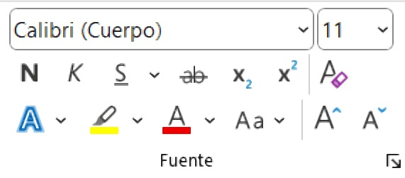
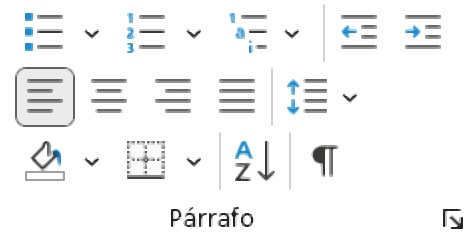

Área de Informática
Comprender los conceptos fundamentales del tema.
Aplicar los conocimientos en casos prácticos.
Docente: Pablo Antonio Peña
Fecha: 06 de Julio de 2025
Un procesador de texto es un programa que permite crear, editar, dar formato y guardar documentos de texto digital.


Pregunta interactiva 1 vinculada a QuizPro.
Pregunta interactiva 2 vinculada a QuizPro.
Pregunta interactiva 3 vinculada a QuizPro.
Pregunta interactiva 4 vinculada a QuizPro.
Pregunta interactiva 5 vinculada a QuizPro.
Responde estas preguntas en el módulo de actividades
Puntos clave para el estudio:• Conceptos base dominados.• Metodologías identificadas.• Aplicaciones prácticas comprendidas.
Realiza un mapa conceptual sobre el tema visto hoy. Valor: 5%. Fecha: Próxima clase.
Concepto A
Definición clave para el examen parcial.
Concepto B
Término técnico fundamental del área.
¡Gracias por tu atención! Sistema ISEMED - Área de Informática.